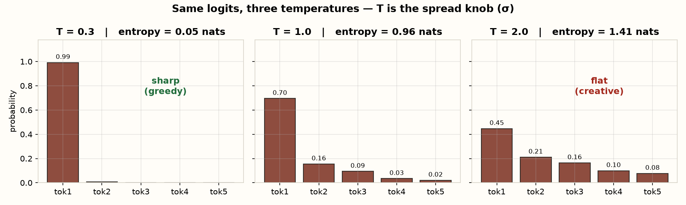
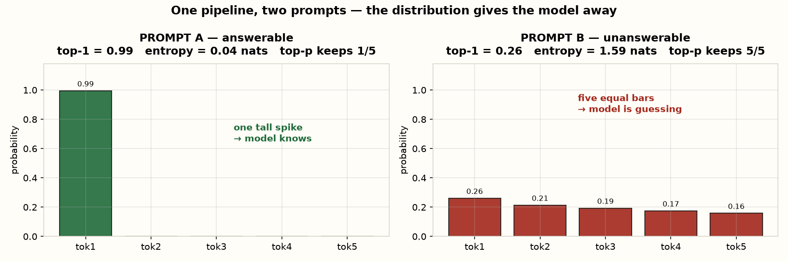
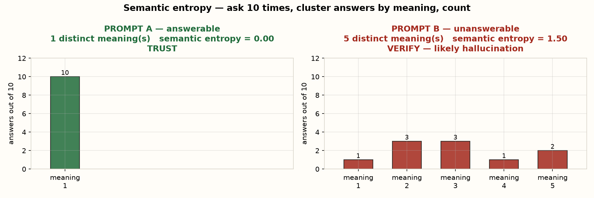
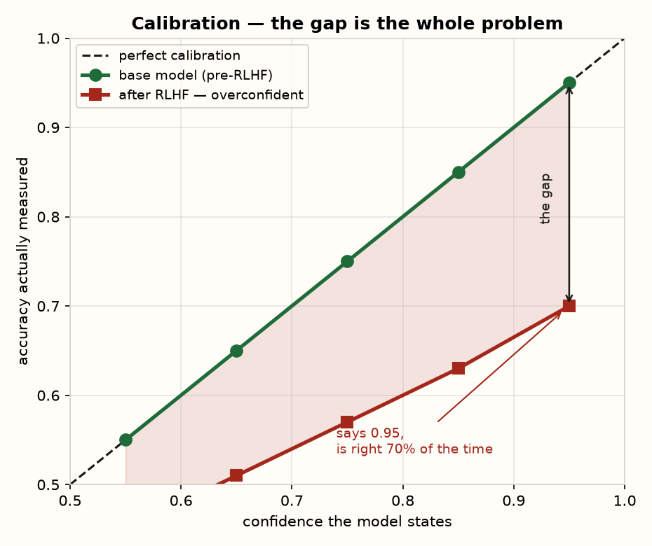

পাঠ ০৮ · সব একসাথে
একটা Prompt, শুরু থেকে শেষ পর্যন্ত
আগের সাতটা পাঠের প্রতিটা ধারণা — একটাই উদাহরণে, ধাপে ধাপে, ছবিসহ।
দুইটা prompt, একটাই pipeline
একটা প্রশ্ন মডেল জানে। আরেকটা জানা অসম্ভব। দুইটাই একই pipeline দিয়ে চালাবো — আর দেখবো সংখ্যাগুলো নিজেরাই পার্থক্যটা ফাঁস করে দেয়।
| PROMPT A | PROMPT B | |
|---|---|---|
| প্রশ্ন | বাংলাদেশ স্বাধীন হয় কোন সালে? | ঢাকার ৩ নম্বর রোডের চায়ের দোকানের মালিকের নাম কী? |
| মডেল কি জানে? | হ্যাঁ — ট্রেনিং ডেটায় হাজারবার আছে | না — এই তথ্য পৃথিবীর কোথাও লেখা নেই |
| মডেল কী করবে? | সঠিক উত্তর | আত্মবিশ্বাসের সাথে বানিয়ে বলবে |
assets/prompt_walkthrough.py।
ধাপ ১ Prompt → token
মডেল বাংলা বাক্য দেখে না। প্রথমে বাক্যটা ভাঙা হয় token-এ, প্রতিটার একটা নম্বর আছে:
"বাংলাদেশ স্বাধীন হয় কোন সালে?"
↓ tokenizer
["বাংলা", "দেশ", " স্বাধীন", " হয়", " কোন", " সালে", "?"]
↓
[8472, 1193, 25518, 3061, 2244, 19807, 30]খেয়াল করো — “বাংলাদেশ” একটা শব্দ হলেও দুইটা token হয়েছে। ইংরেজির তুলনায় বাংলা token বেশি খরচ করে, তাই একই লেখায় API bill বেশি আসে।
ধাপ ২ Transformer-এর ভেতরে — এখানেই Z-score চলে
Token গুলো এখন ৮০টা layer পার হবে। প্রতি layer-এ, প্রতি token-এ যা ঘটে (পাঠ ৬):
প্রতিটা layer:
1. LayerNorm → (x − μ) / σ ← পাঠ ২ এর Z-score, হুবহু
2. Attention → softmax(QKᵀ / √d) ← √d দিয়ে variance ~1 রাখা
3. LayerNorm → আবার z-score
4. Feed-forward৮০ layer × ৭ token = ৫৬০ বার z-score। তুমি পাঠ ২ এ যেটা পরীক্ষার নম্বরে শিখেছিলে, সেটা প্রতিটা উত্তর তৈরির সময় হাজার হাজার বার চলে।
ধাপ ৩ শেষ layer → logits
শেষে প্রতিটা সম্ভাব্য পরের token-এর জন্য একটা কাঁচা সংখ্যা বেরোয়। শীর্ষ ৫টা:
| PROMPT A — token | logit | PROMPT B — token | logit |
|---|---|---|---|
| ১৯৭১ | 8.2 | করিম | 2.4 |
| ১৯৫২ | 2.1 | রহিম | 2.2 |
| ১৯৪৭ | 1.8 | জামাল | 2.1 |
| ১৯৯০ | 0.4 | সালাম | 2.0 |
| সাল | 1.1 | আব্দুল | 1.9 |
পার্থক্যটা এখানেই দেখা যাচ্ছে। A-তে একটা logit বাকিদের চেয়ে অনেক উপরে। B-তে পাঁচটাই কাছাকাছি — মানে মডেলের কাছে পাঁচটা নামই সমান সম্ভব। ও জানে না, কিন্তু থামবেও না।
ধাপ ৪ Softmax → probability. নব ঘুরিয়ে দেখো
নিচের স্লাইডার টানো। এটাই ধাপ ৩ এর logits, জীবন্ত:
PROMPT A — মডেল জানে
PROMPT B — মডেল জানে না
- দুইটাতেই T = ০.১ করো। A এখনও ১৯৭১, B এখনও করিম — কিন্তু B-এর “নিশ্চয়তা” ভুয়া। কম temperature অজ্ঞতা লুকিয়ে দেয়, দূর করে না।
- T = ২.৫ করো। A-তে বিকল্প উঁকি দেয়, B পুরোপুরি এলোমেলো।
- Top-p = ০.৯ রেখে দেখো — A-তে ১টা token রাখে, B-তে ৫টাই। এই সংখ্যাটাই একটা তৈরি hallucination সংকেত।


ধাপ ৫ Sample → token → logprob
একটা token তোলা হলো। তার probability-র log টাই logprob:
PROMPT A → "১৯৭১" p = 0.9949 logprob = -0.005 ✓ ভরসা করা যায়
PROMPT B → "করিম" p = 0.2607 logprob = -1.345 ✗ যাচাই করোতারপর token-টা বাক্যে জুড়ে পুরো জিনিসটা আবার চলে — ধাপ ২ থেকে। প্রতিটা শব্দের জন্য একবার।
ধাপ ৬ পুরো বাক্য → perplexity
Chain rule দিয়ে বাক্যের probability, তারপর perplexity:
A: "বাংলাদেশ স্বাধীন হয় ১৯৭১ সালে"
token confidence : [0.951, 0.887, 0.970, 0.733, 0.923]
P(বাক্য) : 0.554
perplexity : 1.13 ← মডেলের কাছে বাক্যটা মোটেও অবাক করা নয়
B: "দোকানের মালিকের নাম করিম উদ্দিন"
token confidence : [0.200, 0.100, 0.150, 0.060, 0.122]
P(বাক্য) : 0.000022
perplexity : 8.53 ← প্রতিটা শব্দে হোঁচট খেয়েছেPerplexity ১.১৩ মানে প্রতি শব্দে মডেল যেন ১টার সামান্য বেশি বিকল্প নিয়ে ভাবছিল। ৮.৫৩ মানে প্রায় ৯টা বিকল্পের মধ্যে আন্দাজ।
ধাপ ৭ ১০ বার চালাও → semantic entropy
এখানেই পাঠ ৩ ফিরে আসে: একবারে বোঝা যাচ্ছে না? বহুবার চালিয়ে গুনে দেখো।

কেন অর্থ ধরে দল করা, শুধু token নয়? কারণ A-তে মডেল কখনো “১৯৭১”, কখনো “উনিশশো একাত্তর” লিখতে পারে। Token আলাদা, অর্থ এক — একই দলে যাবে। শুধু token গুনলে ভুল করে ভাবতে মডেল দ্বিধায়।
ধাপ ৮ Calibration — এবং কেন মডেলকে জিজ্ঞেস করে লাভ নেই
PROMPT B-তে মডেল লিখবে: “দোকানটির মালিকের নাম করিম উদ্দিন।” কোনো দ্বিধা নেই, কোনো “হয়তো” নেই। জিজ্ঞেস করলে বলবে সে নিশ্চিত।

সিদ্ধান্তের টেবিল — এটাই তুমি কোডে লিখবে
| সংকেত | PROMPT A | PROMPT B | নিয়ম |
|---|---|---|---|
| top-1 probability | 0.99 | 0.26 | < 0.5 হলে সন্দেহ |
| entropy (max 1.61) | 0.04 | 1.59 | max-এর ৭০% এর বেশি = আন্দাজ |
| top-p=0.9 কয়টা রাখে | ১/৫ | ৫/৫ | বেশি রাখা = মডেল ছড়ানো |
| perplexity | 1.13 | 8.53 | উঁচু = হোঁচট খেয়েছে |
| semantic entropy | 0.00 | 1.50 | > 0.5 = যাচাই করো |
| সিদ্ধান্ত | নিজে গ্রহণ করো | মানুষকে দেখাও | পাঠ ৫ এর threshold |
# পাঠ ৫ এর threshold সিস্টেম, LLM-এ বসানো
def route(answer, top1, sem_entropy):
if top1 >= 0.90 and sem_entropy < 0.5:
return auto_accept(answer)
if top1 >= 0.60:
return human_review(answer)
return refuse("যথেষ্ট নিশ্চিত নই")নিজে পরীক্ষা দাও
Top-p = 0.9 তে PROMPT B এর পাঁচটা token-ই টিকে গেল। এটা কী বলছে?
Nucleus কাটে যেখানে ৯০% probability জমে। মডেল নিশ্চিত হলে ১টা token-েই ৯০% পূর্ণ হয়। ৫টা লাগা মানে probability সবার মধ্যে ছড়ানো — অনিশ্চয়তার সরাসরি মাপ।
PROMPT B এ temperature 0.1 করলে কী হবে?
Temperature শুধু distribution-এর আকৃতি বদলায়, মডেলের জ্ঞান নয়। কম T অজ্ঞতাকে আত্মবিশ্বাসের মোড়কে ঢেকে দেয় — hallucination আরও বিশ্বাসযোগ্য শোনায়, তাই আরও বিপজ্জনক।
Semantic entropy-তে ১০ বার চালাতে হয় কেন, একবারে হয় না কেন?
পাঠ ৩ এর যুক্তি হুবহু — একবার কয়েন টস করে P(হেড) বের করা যায় না। ছড়ানো মাপতে হলে বহু নমুনা লাগে। এখানে "ছড়ানো" মানে মডেল কি বারবার একই অর্থে ফিরে আসে, নাকি প্রতিবার নতুন গল্প বানায়।
মনে করে লেখো: একটা LLM উত্তর হাতে এলো। কোনো তথ্য যাচাই না করে শুধু সংখ্যা দেখে কীভাবে বুঝবে এটা hallucination হতে পারে? তিনটা সংকেত লেখো।
আট পাঠ, এক ছবি
prompt
↓ tokenizer ধাপ ১
↓ ৮০ × [LayerNorm → attention → LayerNorm] ধাপ ২ ← পাঠ ২ (Z-score), পাঠ ৬
↓ logits ধাপ ৩
↓ softmax(z / T) ধাপ ৪ ← পাঠ ১ (σ = ছড়ানো), পাঠ ৭
↓ top-p কাটা → sample → logprob ধাপ ৫ ← পাঠ ৫ (confidence)
↓ পুনরাবৃত্তি → বাক্য → perplexity ধাপ ৬ ← পাঠ ৪ (conditional probability)
↓ ১০ বার চালাও → semantic entropy ধাপ ৭ ← পাঠ ৩ (frequentist গোনা)
↓ calibration যাচাই → threshold → সিদ্ধান্ত ধাপ ৮ ← পাঠ ৫ (calibration)cd teach-workspace
uv run --with matplotlib --with numpy assets/prompt_walkthrough.pyPROMPT_A / PROMPT_B এর logit বদলে দেখো কী হয় — এটাই এই পাঠের সেরা অনুশীলন।